Es la página principal de nuestra pagina web, en ella tenemos información sobre las noticias y los foros más destacados.
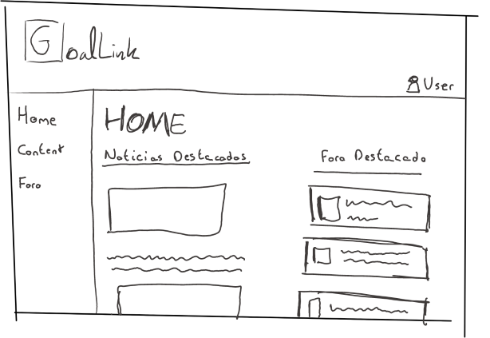Esta página solo puede ser editada por el administrador y se veria así:
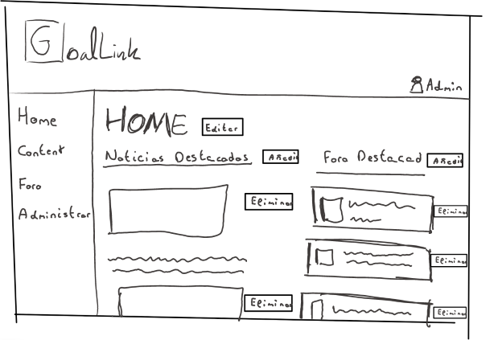En ella se ecnuentra las noticias de nuestra web, que se podra ir actualizando de forma progresiva. Los usuarios podran seleccionar que información quieren ver.
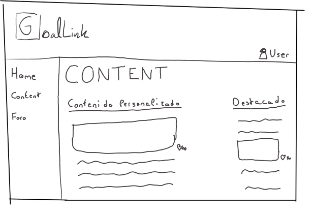Además del administrador, también puede ser editada por el usuario con rol de editor.
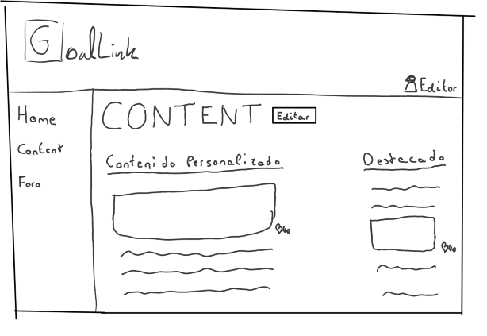Cuando el usuario a seleccionado la noticia que quiere ver, se abrira esta pagina solo mostrando dicha noticia. Tambien podra dar me gusta a la noticia.
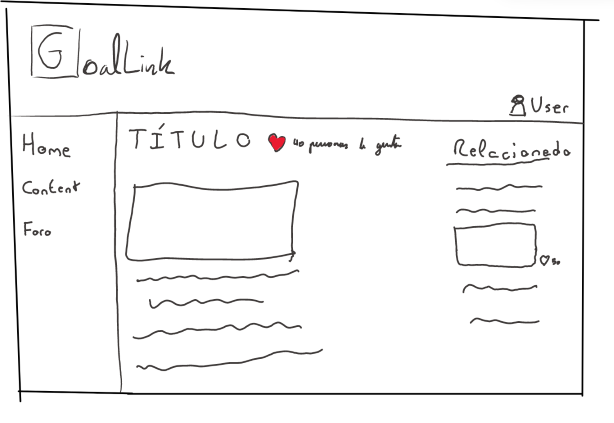El editor podra editar esta pagina modificando los textos o eliminando la noticia.
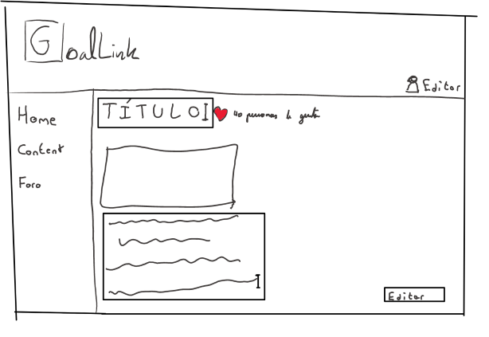Aquí se encuentran todos los foros de discusion divididos por foros suscritos por el usuario y foros destacados.
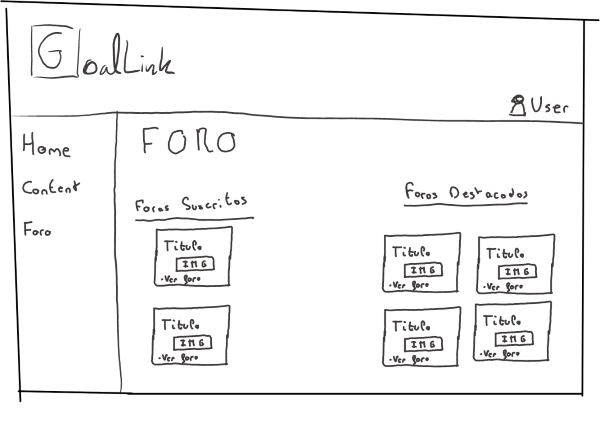Solo podra ser editada por el administrador y por el moderador que tendra una vista de todos los foros y podra editar cada uno de ellos.
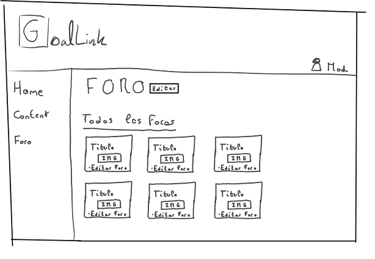Una vez el usuario decida que foro quiere visitar, se le abrira dicho foro para que pueda enviar sus mensajes e interactuar con los demas.
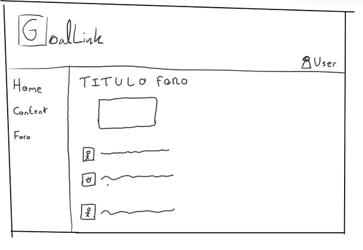Las modificaciones que puede llevar a cabo el moderador es editar el foro o eliminar entradas de los usuarios.
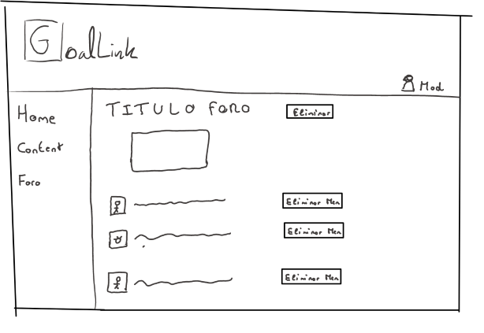Esta página solo esta disponible para el administrador, englobando todas sus funciones, tanto las ediciones de páginas como la gestión de los usuarios.
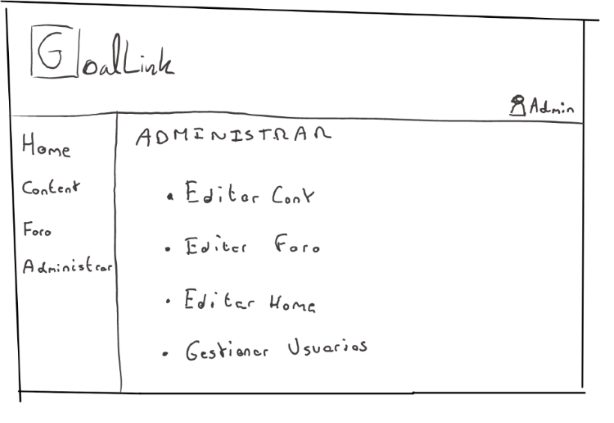A la hora de gestionar los usuarios se le abrira otra venta con la lista de todos los usuarios registrados y podra asignar a cada uno su rol además de eliminarlos si fuera preciso.